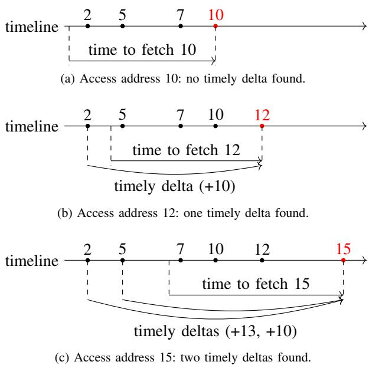
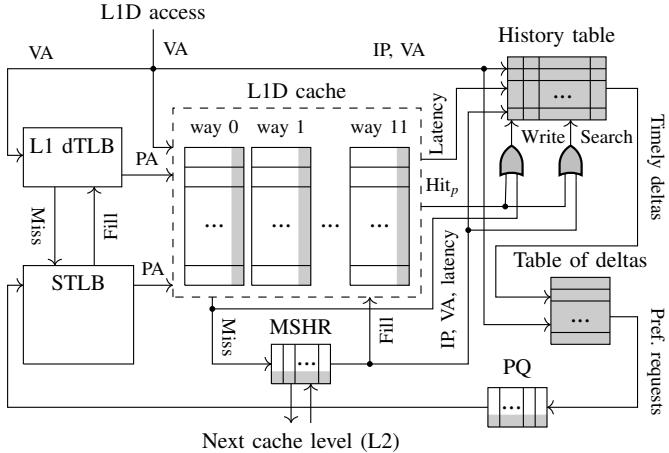
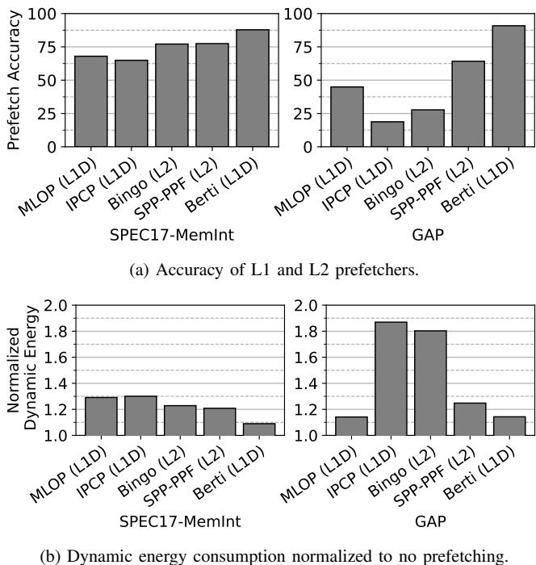

Berti: an Accurate Local-Delta Data Prefetcher 论文解析¶
0. 论文基本信息¶
作者 (Authors): Agustín Navarro-Torres, Biswabandan Panda, Jesus Alastruey-Benedé, et al.
发表期刊/会议 (Journal/Conference): unknown
发表年份 (Publication Year): 2022
研究机构 (Affiliations): Universidad de Zaragoza, Indian Institute of Technology Bombay, University of Murcia
1. 摘要¶
目的
- 解决现有基于全局delta (global deltas) 的硬件预取器（如BOP、MLOP）因忽略局部上下文 (local contextual information) 而导致的预取机会丢失问题。
- 设计一种位于一级数据缓存 (L1D) 的高精度、低成本预取器，通过利用指令指针 (Instruction Pointer, IP) 信息来学习和预测局部delta (local deltas)，以实现高覆盖率和高准确性的预取。
方法
- 提出 Berti 预取器，其核心思想是为每个IP单独学习和选择准确且及时的局部delta (accurate and timely local deltas)。
- 训练机制:
- 测量获取延迟: 通过在MSHR和预取队列(PQ)中记录时间戳，精确测量每次L1D填充的实际延迟。
- 学习及时的delta: 利用历史访问记录和测量到的延迟，回溯找出哪些过去的访问本应触发一个能及时覆盖当前缺失的预取请求，并计算出对应的delta。
- 计算delta覆盖率: 统计每个及时delta在历史搜索中出现的频率，将其作为该delta的覆盖率指标。
- 预测与预取机制:
- 基于delta的覆盖率和L1D的MSHR占用率，使用置信度水印 (confidence watermarks) 决定预取请求的激进程度：
- 高覆盖率 (>65%): 将数据预取至L1D。
- 中等覆盖率 (35%-65%): 将数据预取至L2。
- 低覆盖率 (\<35%): 不进行预取。
- 基于delta的覆盖率和L1D的MSHR占用率，使用置信度水印 (confidence watermarks) 决定预取请求的激进程度：
- 硬件实现:
- 使用两个主要表格：History Table（记录每个IP最近的访问地址和时间戳）和Table of Deltas（存储每个IP的候选delta及其覆盖率和状态）。
- 总存储开销仅为 2.55 KB。
结果
- 在 SPEC CPU2017 和 GAP 工作负载上，与基线 IP-stride 预取器相比，Berti平均性能提升 8.5%；与当时最先进的L1D预取器 IPCP 相比，性能提升 3.5%。
- Berti实现了接近 90% 的预取准确率，远高于MLOP (62.4%) 和 IPCP (50.6%)。
- 得益于高准确率，Berti显著降低了内存层次结构的动态能耗，与IPCP相比，能耗降低 33.6%。
 Figure 7. Speedup vs. storage requirements. Speedup is normalized to L1D IP-stride and averaged across memory-intensive SPEC CPU2017 and GAP traces. X+Y denotes prefetcher X at L1D and prefetcher Y at L2.
Figure 7. Speedup vs. storage requirements. Speedup is normalized to L1D IP-stride and averaged across memory-intensive SPEC CPU2017 and GAP traces. X+Y denotes prefetcher X at L1D and prefetcher Y at L2.
- 下表总结了Berti与其他先进预取器的关键性能对比：
| 预取器 | 相对于IP-stride的平均性能提升 | L1D预取准确率 | 存储开销 |
|---|---|---|---|
| Berti | 8.5% | ~87.2% | 2.55 KB |
| IPCP | 5.0% | 50.6% | ~2.5 KB |
| MLOP | 5.0% | 62.4% | ~10 KB |
结论
- 利用局部上下文 (local context)，特别是指令指针 (IP)，来学习及时的局部delta，是设计高效L1D预取器的有效途径。
- Berti通过其高精度和及时性的预取策略，在极低的硬件开销（2.55 KB）下，显著超越了现有的先进预取器，在性能和能效方面取得了最佳平衡。
- 该研究表明，针对L1D的预取器设计应更加关注局部性和预取时机，而非依赖全局地址流模式。
2. 背景知识与核心贡献¶
研究背景
- 现代高性能处理器严重依赖 data prefetching 技术来隐藏长延迟的内存访问。
- 当前许多先进的硬件预取器（如 BOP, MLOP）基于 global deltas（全局增量）进行训练和预测，即不考虑发起内存访问的具体指令上下文。
- L1D (first-level data cache) 预取器 具有天然优势：能观察到未经过滤的、基于虚拟地址的原始访问流，并可利用 instruction pointer (IP) 等丰富上下文信息，从而实现更精准的预取。然而，设计高效的 L1D 预取器面临存储开销、带宽争用和缓存污染等挑战。
- 现有预取器普遍存在 accuracy（准确率）低下的问题，导致大量无用数据块被加载，不仅浪费 dynamic energy，还可能因污染缓存而损害性能。
研究动机
- 作者观察到，为整个应用选择一个 global delta 会错失大量预取机会，因为最优的 delta 高度依赖于具体的 program context（如 IP）。
- 如
 Figure 3. Best delta selected by BOP (based on global deltas) and Berti (based on per-IP local deltas) for mcf-1554B. Prefetch coverage is shown in grayscale. BOP selects +62 as the best delta (red line), which is not always accurate and provides a coverage of only 2%. 所示，在
Figure 3. Best delta selected by BOP (based on global deltas) and Berti (based on per-IP local deltas) for mcf-1554B. Prefetch coverage is shown in grayscale. BOP selects +62 as the best delta (red line), which is not always accurate and provides a coverage of only 2%. 所示，在 mcf基准测试中，不同 IP 的最佳 delta 差异巨大，而 BOP 选择的全局 delta (+62) 覆盖率极低（仅 2%）。
- 如
- 现有的 local L1D prefetchers（如 IP-stride, IPCP）也存在不足：
- IP-stride 只能处理连续的恒定步长，无法应对复杂或非及时的模式。
- IPCP 虽能分类处理不同模式，但忽略了预取的 timeliness（及时性），且其全局流（GS）组件会产生大量无用预取。
- 在 out-of-order 处理器中，内存访问会被重排序，破坏了 stride 模式的连续性。而 timely local deltas 因其能回溯所有历史访问，对乱序不敏感，更具鲁棒性。
核心贡献
- 提出了 Berti，一种新颖的、基于 local-delta（局部增量）的 L1D 数据预取器。其核心思想是为每个 IP 单独学习并选择 accurate and timely deltas（准确且及时的增量）。
- 设计了一套完整的机制来实现高精度预取：
- 测量获取延迟：通过在 MSHR 和 PQ 中记录时间戳，精确测量每次 L1D 填充的实际延迟。
- 学习及时增量：利用历史访问记录和测量到的延迟，反向推导出哪些历史访问本应触发一个“及时”的预取请求，并计算出对应的 timely local delta。
- 计算增量覆盖率：统计每个 delta 在历史搜索中出现的频率，将其作为 coverage（覆盖率）指标，高覆盖率直接转化为高预取准确率。
- 分级预取决策：根据 delta 的覆盖率设置不同水位线（high/medium/low），决定预取请求应填充到 L1D、L2 还是 LLC，以平衡准确率与覆盖范围。
- Berti 以极低的 2.55 KB 存储开销，实现了卓越的性能和能效：
- 在 SPEC CPU2017 和 GAP 工作负载上，相比基线 IP-stride 平均性能提升 8.5%，相比 SOTA 预取器 IPCP 提升 3.5%。
- 预取准确率高达 ~90%，显著优于 MLOP (62.4%) 和 IPCP (50.6%)。
- 得益于高准确率，Berti 将内存层次结构的动态能耗降低了 33.6%（相比 IPCP）。
3. 核心技术和实现细节¶
0. 技术架构概览¶
整体架构概览
Berti 是一个位于 L1D (first-level data cache) 的硬件数据预取器，其核心思想是利用高置信度的、及时的本地增量 (timely local deltas) 来生成高精度的预取请求。与依赖全局地址流的预取器（如 BOP, MLOP）不同，Berti 为每个 IP (Instruction Pointer) 单独学习和预测最佳增量，从而更好地捕捉程序的局部访问模式。
核心组件与工作流程
Berti 的架构主要由训练（Training）和预测（Prediction）两大阶段组成，并通过一组轻量级的硬件表来实现。
-
训练阶段 (Training Phase)
- 测量获取延迟 (Measuring fetch latency): 通过在 MSHR (Miss Status Holding Register) 和 PQ (Prefetch Queue) 中记录时间戳，精确计算每次 L1D 填充（无论是需求缺失还是预取命中）的实际延迟。
- 学习及时增量 (Learning timely deltas): 利用一个 History Table 来追踪每个 IP 最近的访问历史（包括虚拟地址和时间戳）。当一个缓存行被填充时，Berti 会回溯该 IP 的历史，找出所有能够“及时”预取到当前地址的过去访问点，并计算出对应的增量（当前地址 - 历史地址）。  Figure 4. Learning timely deltas.
- 计算增量覆盖率 (Computing coverage of deltas): 将学习到的及时增量累积到一个 Table of Deltas 中。该表为每个 IP 维护一个条目，其中包含多个候选增量及其对应的 覆盖率 (coverage) 计数器。覆盖率定义为该增量在历史搜索中出现的频率。
-
预测阶段 (Prediction Phase)
- 决策与预取 (Decision and Issuing): 在每次 L1D 访问时，查询 Table of Deltas 以获取与当前 IP 匹配的增量。
- 基于覆盖率的分级预取策略: 根据增量的覆盖率，决定预取请求的激进程度和目标缓存层级：
- 高覆盖率 (High-coverage): 覆盖率 > 65%，且 L1D MSHR 占用率低于阈值时，预取到 L1D。
- 中等覆盖率 (Medium-coverage): 覆盖率在 35%-65% 之间，预取到 L2。
- 低覆盖率 (Low-coverage): 覆盖率 < 35%，不发出预取请求。
- 预取执行: 将选定的增量加到当前访问地址上，生成新的虚拟地址预取请求，并将其插入 PQ。
硬件实现细节
Berti 的硬件设计追求成本效益，总存储开销仅为 2.55 KB。
- History Table: 一个 8-set, 16-way 的缓存，使用 IP 进行索引。每个条目存储 IP tag、24位虚拟地址和16位时间戳。
- Table of Deltas: 一个16-entry的全相联缓存。每个条目包含一个 IP hash tag、一个用于计数的4位计数器，以及一个包含16个增量的数组。每个增量条目存储13位的增量值、4位的覆盖率和2位的状态（指示预取层级）。
 Figure 6. History table and Table of deltas entry format.
Figure 6. History table and Table of deltas entry format. - 系统集成: Berti 直接集成在 L1D 控制器旁，通过扩展 MSHR 和 PQ 来支持时间戳记录，并利用 L1D 的 shadow tag 存储预取请求的延迟信息，以便在需求命中时进行回溯学习。  Figure 5. Berti design overview. Hardware extensions are shown in gray.
关键创新与优势
- 本地化 (Locality): 通过 per-IP 的增量学习，避免了全局增量因不同指令流交织而导致的模式混淆问题。
Figure 3. Best delta selected by BOP (based on global deltas) and Berti (based on per-IP local deltas) for mcf-1554B. Prefetch coverage is shown in grayscale. BOP selects +62 as the best delta (red line), which is not always accurate and provides a coverage of only 2%.
- 及时性 (Timeliness): 显式地将获取延迟纳入训练过程，确保学习到的增量能够在需求发生前及时将数据带回。
- 高精度 (High Accuracy): 严格的覆盖率阈值机制过滤掉了低置信度的增量，使得 Berti 的平均预取精度接近 90%，远高于 IPCP (50.6%) 和 MLOP (62.4%)。
 Figure 10. Prefetch accuracy at the L1D. Percentages of useful requests are broken down into timely (gray) and late (black) prefetch requests.
Figure 10. Prefetch accuracy at the L1D. Percentages of useful requests are broken down into timely (gray) and late (black) prefetch requests. - 能效比 (Energy Efficiency): 高精度直接转化为更低的内存层次动态能耗，相比 IPCP 降低了 33.6%。  Figure 1. Prefetch accuracy and dynamic energy consumption of the memory hierarchy for state-of-the-art prefetchers (IPCP [40], MLOP [48], SPP-PPF [17], and Bingo [13]) averaged across single-threaded traces from memory-intensive SPEC CPU2017 [55] and GAP [14] workloads.
1. Local-Delta Learning¶
Local-Delta Learning 的实现原理与算法流程
Berti 的核心在于其 Local-Delta Learning 机制，该机制旨在为每个 Instruction Pointer (IP) 独立地学习和选择最有效的预取偏移量（delta）。其根本思想是，由同一个 IP 产生的内存访问模式具有高度的局部性和可预测性，而全局的、不区分上下文的 delta 会因不同 IP 访问模式的交织而失效。
- Local Delta 的定义：一个 local delta 被定义为由同一个 IP 发出的两次 demand access 所访问的缓存行地址之间的差值。这与传统的 stride（连续两次访问的地址差）不同，local delta 考虑了更长的历史窗口，从而能捕捉到非连续但有规律的访问模式。
- Timely Delta 的关键性：并非所有 local delta 都有用。Berti 引入了 timeliness（及时性）的概念，即一个 delta 必须能确保预取请求在数据被真正需要之前完成，才能被视为有效。这直接解决了传统预取器因预取过晚而导致 L1D miss latency 无法被隐藏的问题。
- 整体目标：通过精确测量访存延迟，并回溯历史访问记录，Berti 能够识别出那些“如果当时被用来预取，就能及时命中”的 timely local deltas，并统计它们的 coverage（覆盖率），最终只使用高覆盖率的 delta 来触发预取，从而保证极高的 prefetch accuracy。
 Figure 2. Strides, local deltas, and timely local deltas. The values on the timeline (2, 5, 7 ...) represent the addresses referenced by the same instruction.
Figure 2. Strides, local deltas, and timely local deltas. The values on the timeline (2, 5, 7 ...) represent the addresses referenced by the same instruction.
训练阶段的详细算法流程
Berti 的训练过程是一个闭环反馈系统，它利用实际的缓存填充（cache fill）事件来校准其预取决策。
-
步骤一：测量 Fetch Latency
- 在 L1D 发生 demand miss 时，将当前时间戳存入 MSHR。
- 在生成 prefetch request 时，将当前时间戳存入 Prefetch Queue (PQ)。
- 当一个缓存行（无论是因 demand miss 还是 prefetch request）最终填充回 L1D 时，通过当前时间戳减去存储的时间戳，计算出精确的 fetch latency。这个延迟反映了在当前系统负载下，获取该数据块所需的真实时间。
-
步骤二：学习 Timely Deltas
- 每当一个缓存行被填充回 L1D（无论是 demand 还是 prefetched），且其 fetch latency 已知时，Berti 就会触发一次学习过程。
- 它查询 History Table，该表按 IP 索引，记录了该 IP 最近的访问地址和对应的时间戳。
- 对于当前填充的地址
A_current和已知的fetch_latency，Berti 计算出一个 deadline timestamp (T_current - fetch_latency)。 - 它在 History Table 中查找所有时间戳早于
deadline timestamp的历史访问记录。这些历史访问点就是理论上可以发起一个“及时”预取请求的时机。 - 对于每一个这样的历史地址
A_history，计算 timely delta =A_current - A_history。
Figure 4. Learning timely deltas.
- 步骤三：计算 Delta Coverage
- 所有在单次学习过程中发现的 timely deltas 会被送入 Table of Deltas。
- 该表同样按 IP（通过哈希）索引，每个条目包含一个 delta 数组，每个 delta 有自己的 coverage counter。
- 每发现一次某个 delta，其对应的 counter 就递增。
- 当一个条目的总搜索次数计数器（4-bit counter）溢出（达到16次）时，Berti 会为该条目中的所有 deltas 计算其 coverage（即
delta_counter / 16）。 - 根据预设的 watermarks（阈值），为每个 delta 设置 status：
- High-coverage (>65%):
L1D_pref，预取到 L1D。 - Medium-coverage (35%-65%):
L2_pref，预取到 L2。 - Low-coverage (\<35%):
No_pref，不进行预取。
- High-coverage (>65%):
硬件实现与参数设置
Berti 的设计追求低成本和高效率，其硬件结构简洁。
-
History Table:
- 结构: 8-set, 16-way 组相联缓存。
- 索引: 使用 IP。
- 条目内容: 包含 7-bit IP tag, 24-bit cache line address, 16-bit timestamp。
- 功能: 记录最近的访问历史，用于回溯查找 timely deltas。
-
Table of Deltas:
- 结构: 16-entry fully-associative 缓存。
- 索引: 使用 10-bit hash of the IP。
- 条目内容: 包含一个 16-delta array，每个 delta 有 13-bit delta value, 4-bit coverage, 2-bit status。
- 功能: 存储每个 IP 学习到的高价值 deltas 及其状态。
-
关键参数:
- Fetch Latency Counter: 12-bit，足以覆盖平均278周期的延迟。
- Confidence Watermarks: High (65%), Medium/Low (35%)。这是准确性和覆盖率之间的关键权衡点。
- Total Storage Overhead: 2.55 KB per core，非常轻量。
Figure 6. History table and Table of deltas entry format.
 Table I STORAGE OVERHEAD OF BERTI.
Table I STORAGE OVERHEAD OF BERTI.
输入输出关系及在整体系统中的作用
-
输入:
- Demand Accesses: 来自处理器核心的、未命中的加载请求，携带 IP 和 Virtual Address (VA)。
- Cache Fill Events: 来自下级缓存或内存的填充响应，携带 物理地址、IP（对于 demand misses）以及用于计算 fetch latency 的时间信息。
-
输出:
- Prefetch Requests: 基于 Table of Deltas 中状态为
L1D_pref或L2_pref的 deltas 生成的虚拟地址预取请求。这些请求被送入 Prefetch Queue (PQ)，并根据其状态决定预取深度（L1D 或 L2）。
- Prefetch Requests: 基于 Table of Deltas 中状态为
-
在整体系统中的作用:
- 精准的上下文感知: 通过 per-IP 的学习，Berti 能够隔离不同代码段的访问模式，避免了全局预取器因模式混淆而导致的精度下降。
- 动态适应性: 通过实时测量 fetch latency，Berti 能够适应由 MSHR contention, DRAM bank conflicts 等因素引起的可变延迟，确保预取的及时性。
- 高精度驱动: 其“只预取高覆盖率 delta”的策略，从根本上抑制了无用预取（useless prefetches），从而大幅降低了 memory hierarchy 的动态能耗，并避免了 L1D pollution。
- 作为 L1D 预取器的优势: 由于位于 L1D，Berti 能看到原始的 virtual addresses 和完整的 IP 信息，这使其能够进行 cross-page prefetching 并做出更精细的上下文决策，这是 L2/LLC 预取器难以做到的。
2. Timely Delta Detection¶
Timely Delta Detection 的实现原理与算法流程
Berti 的核心创新在于其 Timely Delta Detection 机制，该机制通过精确测量内存访问延迟，并回溯历史访问记录，来识别那些能够“及时”触发预取请求的 local delta。其实现依赖于对 L1D miss latency 的精准捕获。
-
延迟测量 (Latency Measurement):
- 在 MSHR (Miss Status Holding Register) 中为每个 demand miss 条目扩展一个 16-bit timestamp 字段，记录该请求进入 MSHR 的时间。
- 在 PQ (Prefetch Queue) 中为每个 prefetch request 条目同样扩展一个 16-bit timestamp 字段，记录该预取请求被生成的时间。
- 当一个 cache line 最终 fill 回 L1D 时（无论是由 demand miss 还是 prefetch request 触发），通过当前时钟减去存储的 timestamp 来计算 fetch latency，结果用 12-bit 存储。
- 如果计算出的延迟发生溢出（overflow），则将其置零，表示该次填充不用于学习 timely delta。
-
Timely Delta 的学习流程 (Learning Timely Deltas):
- 该学习过程在两种情况下触发：
- 一个 demand miss 填充了 L1D。
- 一个由预取带来的 cache line 被 core demand（即，如果没有预取器，这里会发生一次 miss）。
- 对于上述任一情况，系统会获取该次填充的 IP (Instruction Pointer)、虚拟地址 (VA) 和 fetch latency。
- 系统查询 History Table（一个按 IP 索引的缓存结构），查找该 IP 的所有历史访问记录。
- 对于每条历史记录，计算其访问时间戳与“理想预取触发时间”的关系。“理想预取触发时间” = “当前访问的填充完成时间” - “fetch latency”。
- 如果某条历史访问的发生时间 早于或等于 “理想预取触发时间”，那么从该历史地址到当前地址的差值（delta）就被认为是一个 timely delta。
- Figure 4. Learning timely deltas.
- 如图所示，当地址 12 被填充时，其 fetch latency 决定了预取必须在 T1 时刻前发出。历史访问地址 2 发生在 T1 之前，因此 delta +10 (12-2) 被识别为 timely delta。
- 该学习过程在两种情况下触发：
输入输出关系及在整体中的作用
-
输入:
- L1D Fill Event: 包含 IP、虚拟地址 (VA)、fetch latency。
- History Table: 存储了近期按 IP 分类的访问记录，每条记录包含 IP tag、地址和 timestamp。
-
输出:
- 一组 Timely Deltas: 针对当前 fill event，识别出的所有能及时覆盖它的历史 delta。
- 这些 deltas 被送入 Table of Deltas 结构，用于更新其 coverage counter。
-
在 Berti 整体架构中的作用:
- Accuracy 的基石: 通过只考虑 timely 的 delta，Berti 从根本上过滤掉了那些虽然模式正确但发出太晚、无法掩盖延迟的预取请求，这是其实现 近90%高准确率 的关键。
- Coverage 的来源: 通过统计每个 timely delta 的出现频率（coverage），Berti 能够区分出哪些 delta 是稳定可靠的（高 coverage），并仅使用这些高置信度的 delta 来生成未来的预取请求。
- 适应动态环境: 由于每次 fill 都会重新测量 latency，该机制能自动适应 variable cache fill latency（如由 MSHR contention, DRAM bank conflicts 等引起的变化），确保预取的 timeliness 在各种系统负载下都有效。
关键数据结构与参数
Figure 6. History table and Table of deltas entry format.
-
History Table:
- 组织形式: 8-set, 16-way 直接映射缓存。
- 索引方式: 使用 IP。
- 替换策略: FIFO。
- 每项内容: 7-bit IP tag, 24-bit 地址, 16-bit timestamp。
-
Table of Deltas:
- 组织形式: 16-entry fully-associative 缓存。
- 索引方式: 使用 IP 的哈希值 (10-bit tag)。
- 替换策略: FIFO。
- 每项内容: 包含一个最多 16 个 delta 的数组。每个 delta 记录其值 (13-bit)、coverage (4-bit) 和 status (2-bit)。
- Coverage Watermarks:
- High-coverage watermark: 65% (coverage > 10)，状态设为
L1D_pref。 - Medium-coverage watermark: 35% (coverage > 5)，状态设为
L2_pref。 - 低于此阈值的 delta 不会触发预取 (
No_pref)。
- High-coverage watermark: 65% (coverage > 10)，状态设为
3. Coverage-Based Prefetch Filtering¶
Coverage-Based Prefetch Filtering 的实现原理与算法流程
Berti 的核心创新之一是其基于 coverage（覆盖率）的预取过滤机制。该机制确保只有那些被证明在历史访问中具有高预测价值的 local delta 才会被用于生成预取请求，从而实现了极高的 prefetch accuracy（预取准确率）。
-
Coverage 的定义与计算:
- Coverage 被定义为一个特定 delta 在所有“及时性学习”（timeliness learning）事件中出现的频率。
- 具体计算方式为：
coverage = (delta 出现的次数) / (总的学习搜索次数)。 - 这个计算是在每个 Instruction Pointer (IP) 的上下文中独立进行的，保证了 locality（局部性）。
- 如论文图4所示，在每次 L1D 填充（无论是因 demand miss 还是 prefetched line 被 demand）后，系统会回溯该 IP 的历史访问记录，找出所有能“及时”预取到当前地址的 timely deltas。这些被发现的 deltas 的计数器会递增。
-
Confidence Watermarks 与状态机:
- Berti 使用一套 confidence watermarks（置信度水位线）来决定一个 delta 是否值得信任以及应将其预取到哪一级缓存。
- 算法维护一个 Table of deltas，其中每个条目包含一个 delta 值、一个 4-bit coverage counter 和一个 2-bit status 字段。
- 流程如下：
- 每次成功的学习搜索（即找到 timely deltas）会使该 IP 对应的主计数器（4-bit）加一。
- 同时，本次搜索中发现的每个 timely delta 的内部 coverage 计数器也加一。
- 当主计数器溢出（达到16次）时，系统进入决策阶段：
- 对于每个 delta，计算其最终 coverage 值（内部计数器值 / 16）。
- 根据预设的水位线设置其 status:
- L1D_pref: 如果 coverage > 65% (即计数值 > 10)。
- L2_pref: 如果 35% < coverage ≤ 65% (即 5 < 计数值 ≤ 10)。
- No_pref: 如果 coverage ≤ 35% (即计数值 ≤ 5)，不生成预取。
- 决策完成后，所有计数器和状态被重置，开始新一轮的学习周期。
- 此外，在学习初期（warming-up phase），当收集到的 deltas 少于8个时，系统会采用更严格的 80% 高水位线以增加置信度。
Figure 6. History table and Table of deltas entry format.
- 参数设置与硬件实现:
- 高置信度水位线 (High-coverage watermark): 65%。这是触发 L1D 预取的关键阈值。
- 中置信度水位线 (Medium-coverage watermark): 35%。用于触发 L2 预取。
- 低置信度水位线 (Low-coverage watermark): 实际上被设为与中水位线相同（35%），禁用了仅预取到 LLC 的选项，因为评估显示这没有性能收益。
- 计数器精度: 使用 4-bit 计数器，最大计数值为16，这在精度和硬件开销之间取得了良好平衡。
- 状态字段: 2-bit，足以编码
L1D_pref,L2_pref,No_pref三种状态。
输入输出关系及在整体架构中的作用
-
输入:
- IP (Instruction Pointer): 用于索引 History table 和 Table of deltas，确保所有操作都在正确的上下文中进行。
- Virtual Address (VA): 用于计算 delta 和生成预取请求。
- Fetch Latency: 从 MSHR 或 L1D shadow tag 中获取，是判断一个历史访问是否能产生 timely delta 的关键依据。
- L1D MSHR Occupancy: 在预测阶段，与 delta 的 coverage 一起决定最终的预取目标（L1D 或 L2）。
-
输出:
- Prefetch Requests: 仅当 delta 的 status 为
L1D_pref或L2_pref时才会生成。请求地址通过current VA + selected delta计算得出，并被插入 Prefetch Queue (PQ)。 - Cache Fill Level: 由 delta 的 status 和 MSHR occupancy 共同决定。例如，即使一个 delta 是
L1D_pref，如果 MSHR 占用率过高（>70%），请求也可能只填充到 L2 以避免拥塞。
- Prefetch Requests: 仅当 delta 的 status 为
-
在整体架构中的作用:
- Accuracy Guarantor: 这是 Berti 实现 ~90% 高准确率的核心。通过严格过滤掉低 coverage 的 deltas，系统几乎只发出有用的预取请求，极大减少了 cache pollution（缓存污染）和 useless traffic（无用流量）。
- Timeliness Enforcer: 因为 coverage 的计算本身就基于 timely deltas，所以高 coverage 的 deltas 天然具有良好的及时性。
- Resource Orchestrator: 通过将不同置信度的预取请求导向不同的缓存层级（L1D 或 L2），该机制智能地管理了有限的 L1D 带宽和 MSHR 资源，避免了因过度激进预取而导致的性能下降。
- Energy Efficiency Driver: 高准确率直接转化为更低的内存层次动态能耗。如图15所示，Berti 相比 IPCP 将内存层次的动态能耗降低了 33.6%。
Figure 10. Prefetch accuracy at the L1D. Percentages of useful requests are broken down into timely (gray) and late (black) prefetch requests.

对设计选择的敏感性分析
论文图21展示了不同水位线配置对性能的影响，验证了所选参数的有效性。
 Figure 21. Normalized speedup with different L1D and L2 confidence watermarks averaged across memory intensive SPEC CPU2017 and GAP benchmarks. Speedup is rounded to two decimal places (1.085 is rounded to 1.09).
Figure 21. Normalized speedup with different L1D and L2 confidence watermarks averaged across memory intensive SPEC CPU2017 and GAP benchmarks. Speedup is rounded to two decimal places (1.085 is rounded to 1.09).
- 选择 65% 作为高水位线是一个 sweet-spot（最佳平衡点）。过低的水位线会引入噪声，降低准确率；过高的水位线则会过于保守，牺牲 coverage 和性能。
- 该机制对参数变化表现出一定的鲁棒性，在一个较宽的水位线范围内都能获得不错的性能，但 65%/35% 的组合提供了最高的准确率和性能。
4. Multi-Level Prefetch Orchestration¶
Berti 的 Multi-Level Prefetch Orchestration 机制是其实现高精度与高性能平衡的核心，它通过一套基于置信度和资源状态的动态决策系统，智能地将预取请求引导至 L1D、L2 或 LLC，从而避免因盲目填充 L1D 而导致的 L1D pollution 和 bandwidth starvation。
核心决策逻辑
- Berti 的决策主要依赖两个关键输入：
- Delta Coverage: 每个本地 delta 在历史训练中被验证为“及时”的频率，该指标直接反映了其作为预取依据的准确性。
- L1D MSHR Occupancy: L1D Miss Status Holding Registers 的当前占用率，用于感知 L1D 填充路径的资源争用压力。
- 基于这两个输入，Berti 使用一组可配置的 watermarks (水位线) 来决定预取请求的目标缓存层级。
预取目标层级判定流程
- 系统定义了三个覆盖度水位线：high-coverage watermark, medium-coverage watermark, 和 low-coverage watermark。
- 具体的判定规则如下：
- 填充至 L1D: 当一个 delta 的覆盖度 高于 high-coverage watermark（论文中设定为 65%），并且 L1D MSHR occupancy 低于 occupancy watermark（论文中设定为 70%）时，生成的预取请求会被允许填充到 L1D。这确保了只有高置信度的请求在资源充裕时才会进入最宝贵的 L1D。
- 填充至 L2: 当一个 delta 的覆盖度 高于 medium-coverage watermark（论文中设定为 35%）但未达到 high-coverage watermark，或者虽然覆盖度高但 L1D MSHR occupancy 过高 时，预取请求只会被填充到 L2。这作为一种折衷方案，既利用了中等置信度的预测，又避免了在 L1D 繁忙时加剧拥塞。
- 不进行预取 / 仅填充至 LLC: 论文明确指出，对于低覆盖度的 delta，即使理论上可以只填充到 LLC，但在实际评估中并未带来性能提升。因此，作者将 low-coverage watermark 设置为与 medium-coverage watermark 相同（35%），有效地禁用了向 LLC 的低置信度预取，进一步控制了不必要的内存流量。
硬件实现与状态管理
- 这一决策逻辑在 Table of deltas 结构中实现。该表的每个条目为每个 delta 维护一个 status (2-bit) 字段，用于记录其当前的预取目标层级。
- Figure 6. History table and Table of deltas entry format.
- Status 字段的可能值:
L1D_pref: 预取至 L1D。L2_pref: 预取至 L2。No_pref: 不发起预取。
- 在 Prediction 阶段，每当发生一次 L1D 访问，Berti 会查询 Table of deltas。对于状态为
L1D_pref或L2_pref的 delta，系统会将其与当前访问地址相加，生成预取地址并插入 Prefetch Queue (PQ)。后续的缓存子系统会根据该请求的 status 字段决定其最终填充的层级。
参数设置与效果
- 论文通过敏感性分析（Figure 21）验证了所选水位线的有效性，表明 65%/35% 的组合在准确性和覆盖率之间取得了最佳平衡。
- Figure 21. Normalized speedup with different L1D and L2 confidence watermarks averaged across memory intensive SPEC CPU2017 and GAP benchmarks. Speedup is rounded to two decimal places (1.085 is rounded to 1.09).
- 此外，为了在学习初期也能谨慎地进行预取，Berti 引入了 warm-up 机制：当收集到的 delta 数量少于 8 个时，会临时将 high-coverage watermark 提高到 80%，以要求更高的置信度。
在整体架构中的作用
- 输入: 来自 Training 阶段的、带有覆盖度统计信息的 timely local deltas。
- 输出: 根据资源状态和置信度动态调整目标层级的 prefetch requests。
- 作用: 该机制是 Berti 实现 高精度（约 87.2%）和 低能耗（相比 IPCP 降低 33.6% 动态能耗）的关键。它通过精细化的流量控制，将宝贵的 L1D 带宽和存储空间留给最有价值的数据，同时利用 L2 作为次优选择来捕获更多潜在的有用数据，从而在性能、精度和资源开销之间达成了卓越的平衡。
5. Efficient Hardware Implementation¶
硬件实现概览
Berti 的硬件设计核心在于以极低的 2.55 KB 存储开销，高效地学习和应用 timely local deltas。其架构主要由两个关键数据结构组成，并通过与 L1D 缓存、MSHR（Miss Status Holding Registers）和 PQ（Prefetch Queue）的交互来完成训练和预测。
Figure 5. Berti design overview. Hardware extensions are shown in gray.
-
History Table (历史表):
- 组织形式: 一个 8-set, 16-way 的缓存结构，采用 FIFO 替换策略。
- 索引方式: 使用 IP (Instruction Pointer) 进行索引和搜索。
- 条目内容 (Entry Format):
- Tag: IP 的 7 个最低有效位 (用于匹配)。
- Address: 目标缓存行地址的 24 个最低有效位。
- Timestamp: 16-bit 时间戳，记录该访问发生的时间。
- 写入时机: 在 L1D demand miss 或 prefetched line 被 demand hit 时，将当前的 IP、虚拟地址 (VA) 和时间戳 写入表中。
- 作用: 为学习 timely deltas 提供过去访问的历史记录。
-
Table of Deltas (Delta 表):
- 组织形式: 一个 16-entry 的 fully-associative 缓存，同样采用 FIFO 替换策略。
- 条目内容 (Entry Format):
- Tag: 基于 IP 的哈希值 (10-bit)。
- Counter: 4-bit 计数器，记录针对该 IP 的搜索次数。
- Delta Array: 包含 16 个 delta 条目，每个条目包含：
- Delta Value: 13-bit 的 delta 值。
- Coverage: 4-bit 的覆盖率计数器。
- Status: 2-bit 状态位，决定预取请求填充到哪一级缓存（
L1D_pref,L2_pref,No_pref）。
- 作用: 存储和管理每个 IP 对应的高覆盖率 delta，并根据其置信度决定预取的激进程度。
训练流程：学习 Timely Deltas
训练过程旨在识别出那些能够 及时 将数据预取到 L1D 的 delta，并计算它们的覆盖率。
-
测量 Fetch Latency (获取延迟):
- MSHR 扩展: 在 MSHR 中增加一个 16-bit 时间戳 字段，在 demand miss 发生时记录时间。
- PQ 扩展: 在 PQ 中也增加一个 16-bit 时间戳 字段，在预取请求生成时记录时间。
- 延迟计算: 当 L1D 完成填充（fill）时，用当前时间戳减去存储的时间戳，得到 fetch latency，并用 12-bit 字段存储。如果发生溢出，则丢弃该延迟数据。
-
学习 Timely Deltas:
- 触发时机: 在 demand miss fill 或 prefetched line 被 demand hit 时触发。
- 搜索历史: 利用刚计算出的 fetch latency，在 History Table 中搜索同一 IP 的历史访问记录。
- 识别 Timely Access: 对于当前访问地址 A 和其 fetch latency L，任何在时间
(current_time - L)之前发生的、由同一 IP 发起的访问 B，都可以作为触发对 A 的及时预取的起点。 - 计算 Delta: Delta = A - B。系统会收集最多 8 个 最近的、能产生及时预取的 delta。
-
计算 Delta Coverage (覆盖率):
- 累加计数: 将每次搜索得到的 timely delta，在 Table of Deltas 中对应的 coverage 计数器上进行累加。
- 覆盖率计算: 当 4-bit 搜索计数器 溢出（达到 16 次）时，计算每个 delta 的覆盖率 = (coverage counter / 16)。
- 设置状态 (Status):
- 高覆盖率 (>65%, 即 coverage > 10): 设置状态为
L1D_pref，允许预取到 L1D。 - 中等覆盖率 (35%-65%): 设置状态为
L2_pref，只预取到 L2。 - 低覆盖率 (\<35%): 设置状态为
No_pref，不发起预取。
- 高覆盖率 (>65%, 即 coverage > 10): 设置状态为
- 重置与替换: 状态设置后，计数器和 coverage 数组被重置，开始新一轮学习。对于新 delta 的插入，会优先替换掉状态为
L2_pref_repl(覆盖率\<50%) 或No_pref的条目。
预测流程：发起预取请求
预测阶段利用训练好的 Table of Deltas 来指导实际的预取操作。
- 查找匹配条目: 在每次 L1D 访问时，使用当前 IP 在 Table of Deltas 中进行查找。
- 生成预取地址: 对于查找到的条目，遍历其 Delta Array，将所有状态为
L1D_pref或L2_pref的 delta 值加到当前访问的 虚拟地址 (VA) 上，生成新的预取目标地址。 - 插入 PQ: 将生成的预取请求（虚拟地址）插入 Prefetch Queue (PQ)。
- 动态调整填充级别:
- 对于
L1D_pref的请求，还需检查 L1D MSHR occupancy。只有当占用率低于 70% 时，才允许填充到 L1D；否则，降级为只填充到 L2。 L2_pref的请求则直接填充到 L2。
- 对于
- 地址翻译: 预取请求在 L2 使用 STLB (Second-level TLB) 进行虚拟地址到物理地址的翻译。若 STLB miss，则丢弃该预取请求。
存储开销明细
Berti 的总存储开销被严格控制在 2.55 KB，具体分配如下：
| 结构 | 参数 | 总大小 (Bytes) |
|---|---|---|
| History Table | 8 sets * 16 ways * (7 tag + 24 addr + 16 timestamp) bits | 752 |
| Table of Deltas | 16 entries * (10 tag + 4 counter + 16*(13 delta + 4 cov + 2 status)) bits | 1840 |
| 总计 | 2592 (≈ 2.55 KB) |
Table I STORAGE OVERHEAD OF BERTI.
在整体系统中的作用
Berti 作为一个 L1D prefetcher，其高效的硬件实现使其能够在处理器的关键路径之外完成复杂的训练逻辑，同时以极低的存储代价提供高精度的预取。
- 输入: 处理器发出的所有 L1D 访问请求（包含 IP 和 虚拟地址 VA），以及来自 MSHR/PQ 的 fill 事件 和 latency 信息。
- 输出: 生成的 预取请求（虚拟地址），并注入到 PQ 中，最终影响 L1D/L2/LLC 的缓存填充行为。
- 核心价值: 通过 per-IP local context 和 timeliness-aware 的学习机制，Berti 能够在 不污染 L1D 的前提下，显著提升预取 accuracy（约 87.2%）和 timeliness，从而在降低内存层次 dynamic energy 消耗的同时，最大化性能收益。
4. 实验方法与实验结果¶
实验设置
- 仿真平台基于 ChampSim，并扩展了 decoupled front-end 和详细的地址转换内存层次结构。
- 系统配置模仿 Intel Sunny Cove 微架构，具体参数见下表。
| 组件 | 配置 |
|---|---|
| Core / ROB | 4-wide OoO / 256 entries |
| L1D Cache | 32 KB, 8-way, 64B line, 4-cycle hit latency, 2 read ports |
| L2 Cache | 512 KB, 8-way, 64B line, 12-cycle hit latency |
| LLC | 8 MB, 16-way, 64B line, inclusive |
| DRAM | DDR5-6400, 4-channel, detailed timing model |
- 工作负载：使用 SPEC CPU2017 和 GAP 基准测试套件中的 memory-intensive traces（共64个），以及 CloudSuite。
- 评估指标：以 IPC speedup（相对于 IP-stride 基线）、prefetch accuracy、demand MPKI（每千条指令的缺失数）和 memory hierarchy dynamic energy 为主要指标。
- Prefetcher 对比：
- L1D-only: Berti, IPCP (DPC-3 winner), MLOP (DPC-3 3rd place)。
- Multi-level: 上述 L1D prefetcher 与 SPP-PPF、Bingo 等 L2 prefetcher 的组合。
 Table II SIMULATION PARAMETERS OF THE BASELINE SYSTEM.
Table II SIMULATION PARAMETERS OF THE BASELINE SYSTEM.
核心结果数据
- 性能提升 (Speedup)：
- 相对于 IP-stride 基线，Berti 在 SPEC+GAP 上平均提升 8.5%。
- 相对于当前最先进的 IPCP，Berti 仍能获得 3.5% 的显著性能提升。
- 在 SPEC CPU2017 上，Berti 平均提升 11.6%；在更具挑战性的 GAP 套件上，Berti 是唯一能带来正向收益（+1.9%）的 L1D prefetcher，而 IPCP 和 MLOP 分别下降 2.9% 和 7.8%。
Figure 7. Speedup vs. storage requirements. Speedup is normalized to L1D IP-stride and averaged across memory-intensive SPEC CPU2017 and GAP traces. X+Y denotes prefetcher X at L1D and prefetcher Y at L2.
 Figure 8. Speedup of L1D prefetchers compared to a system with L1D IP-stride for memory-intensive SPEC CPU2017 and GAP traces.
Figure 8. Speedup of L1D prefetchers compared to a system with L1D IP-stride for memory-intensive SPEC CPU2017 and GAP traces.
- 准确率 (Accuracy)：
- Berti 的 prefetch accuracy 高达 87.2%。
- 作为对比，MLOP 为 62.4%，IPCP 仅为 50.6%。
- 几乎所有 Berti 的预取请求都是 timely（及时的），而其他 prefetcher 会产生大量 late（延迟的）请求。
Figure 10. Prefetch accuracy at the L1D. Percentages of useful requests are broken down into timely (gray) and late (black) prefetch requests.
- 覆盖度 (Coverage)：
- Berti 能更有效地减少各级缓存的 demand misses，尤其是在 L2 和 LLC。
- 在 GAP 工作负载上，Berti 相比 IPCP 将 LLC demand MPKI 降低了 12.4%。
 Figure 11. Prefetch coverage in terms of average L1D, L2, and LLC demand MPKIs for all L1D prefetchers.
Figure 11. Prefetch coverage in terms of average L1D, L2, and LLC demand MPKIs for all L1D prefetchers.
- 能效 (Energy Efficiency)：
- 得益于其高准确率，Berti 显著降低了内存层次结构的动态能耗。
- 相比 IPCP，Berti 将动态能耗降低了 33.6%。
- 在 SPEC 和 GAP 上，Berti 的能耗开销分别为 9.0% 和 14.3%，远低于其他 prefetcher。

消融实验 (Ablation Studies)
- Confidence Watermarks 的影响：
- 实验探索了不同 L1D 和 L2 置信度阈值对性能的影响。
- 结果表明，论文选择的 high watermark (65%) 和 medium watermark (35%) 是一个 sweet-spot，在准确率和覆盖率之间取得了最佳平衡。过高或过低的阈值都会损害性能。
Figure 21. Normalized speedup with different L1D and L2 confidence watermarks averaged across memory intensive SPEC CPU2017 and GAP benchmarks. Speedup is rounded to two decimal places (1.085 is rounded to 1.09).
- Berti 表大小的敏感性：
- 将 Table of deltas 的大小减少到 1/4 会导致性能严重下降 12.1%，说明该表对存储历史 delta 模式至关重要。
- 增加表的大小（2x 或 4x）只能带来边际性能增益，证明了原始设计的 storage efficiency。
- 对于 CactuBSSN 这类具有大量交织 IP 的 benchmark，增大表尺寸可以带来显著收益（+22%），这解释了 Berti 在该 benchmark 上的相对劣势。
 Figure 22. Speedup vs. size of Berti tables and number of deltas. 0.25× to 4× correspond to one-fourth and four times, respectively.
Figure 22. Speedup vs. size of Berti tables and number of deltas. 0.25× to 4× correspond to one-fourth and four times, respectively.
-
Latency Counter 精度的影响：
- 使用 4-bit timestamp 会导致性能明显下降（SPEC: 1.16 -> 1.07, GAP: 1.02 -> 0.98），证明了精确测量 fetch latency 对学习 timely deltas 的重要性。
- 将 counter 从 12-bit 增加到 32-bit 并未带来性能提升，说明 12-bit 已足够。
-
Cross-page Prefetching 的作用：
- 通过禁用跨页预取进行测试，发现性能有所下降（SPEC: 1.16 -> 1.10, GAP: 1.02 -> 1.01）。
- 这表明 cross-page prefetching 确实有用，但 Berti 学习到的大多数有效 delta 仍位于 4KB OS page 边界内。